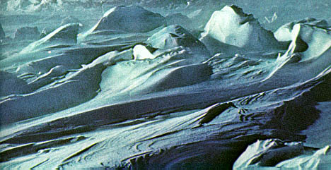
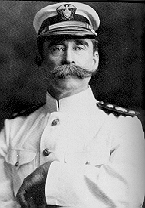
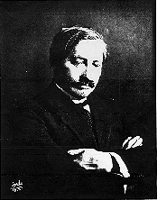
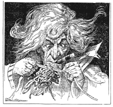
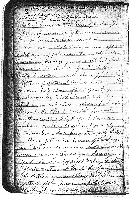

 |
The North Pole—the ambition of many ambitious men in the decades before and after the first year of the Twentieth Century. In an age unsure whether wealth and comfort had made men unsuited to heroic deeds, each dreamed of accomplishing the one last heroic deed left to the physical explorer—to stand at the Pole; to awaken the polar goddess from her sleep of centuries; to grasp the white, Frozen Grail that had alluded all others. |
 One of those dreamers, Robert E. Peary, a civil engineer in the US Navy, saw the conquest of the North Pole as exactly that—one last chance in an increasingly mundane world for timeless daring—something of a latter day knightly quest—one that, coincidentally, he envisioned as leading to what he most desired—not the North Pole, but temporal fame, and also immense wealth and eventual immortality. After several false starts he decided that his route to fame would be one to the top of the world, and that his name would be known forever as that of the first man to reach it. When he had finally settled upon his course, he told his fearful mother, "Remember Mother I must have fame & cannot reconcile myself to years of commonplace drudgery and a name late in life when I see an opportunity to gain it now and sip the delicious draught while yet I have youth and strength and capacity to enjoy it to the utmost." |
 His eventual rival, a physician from rural New York named Frederick A. Cook, had a different vision. He dreamed of the struggle across the chaotic arctic ice toward the same goal as a divine test that would prove himself to himself and also prove him the peer of all other men. "I saw myself," he wrote of that vision, "attempting to win in the most spectacular and difficult marathon for the testing of human strength, courage and perseverance, of body and brain, which God has offered to man, until I stood alone, a victor, upon the world's pinnacle." On September 1, 1909, Frederick Cook cabled from the Shetland Islands that he had stood the divine test and had reached the North Pole on April 21, 1908. The name of Frederick Albert Cook, who up to then had been largely unknown outside of the exploring fraternity, was on the lips of the entire world when word arrived on September 5 that Peary had returned claiming victory in the same quest, but one year after the date Cook had announced he had reached the Pole. |
 The world was stunned that after centuries of failure and many gruesome deaths, within a single week two explorers were claiming to have done the deed. It was even more amazed when Peary bluntly denounced Cook's prior claim as a fraud. Thus began the greatest geographical controversy of all time, which quickly became a near obsession for many as, day after day for four months, accusations mounted and arguments raged over who was telling the truth. What came to be known as The Polar Controversy, was a dispute so bitter that it divided families and lifelong friends into warring camps over one cold, yet burning question—a question that continues to be argued over down to this very day, more than ninety years after it was first asked: Who discovered the North Pole? |
 In 1989, the long hidden papers of Frederick Cook were given to the Library of Congress. This development, combined with years of fascination with the subject, sent the author on his own quest, thousands of hours long, tens of thousands of miles traveled, hundreds of thousands of pages read, and millions of symbols entered into a machine’s magnetic memory. These and other primary documents of the polar feud, including the personal papers of Robert Peary were combed for eyewitness accounts, while scores of inquiries seeking additional evidence went out, which unearthed long-overlooked documents, climaxed by the most spectacular find of all—a photographic copy of the original diary which Cook had kept during his journey toward the Pole, which had lain totally forgotten for more than 84 years in a scientific library in Copenhagen, Denmark. |
The result is Cook & Peary, the Polar Controversy, Resolved, a history of exploration at a time when there were still great blanks upon the face of the globe and before mechanized technology ended the era of the classic battle of one man against all nature; a dual biography of two very different men whose common ambition entwined their lives for all time, and one which peels away the myths that have grown up around them, singly and collectively, and replaces them with documented facts, which, in turn, unravel multiple conspiratorial theories to reveal the truth about what has been called the greatest scientific hoax of all time. Now, at last, the answers can be had to questions that have been debated endlessly for more than nine decades. More than that, it is a search for truth, not only about this one seemingly unimportant historical incident, but a search for the nature of truth itself, embodied in a true story that is for once, really stranger than fiction—so much stranger that had it not actually happened it would seem entirely unbelievable. Who discovered the North Pole? Read Cook & Peary, then decide for yourself. |